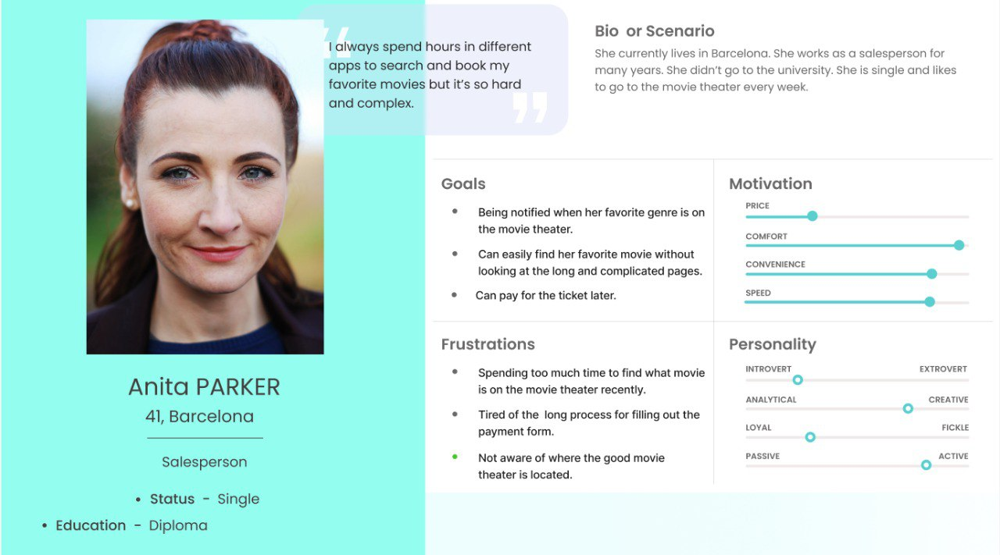
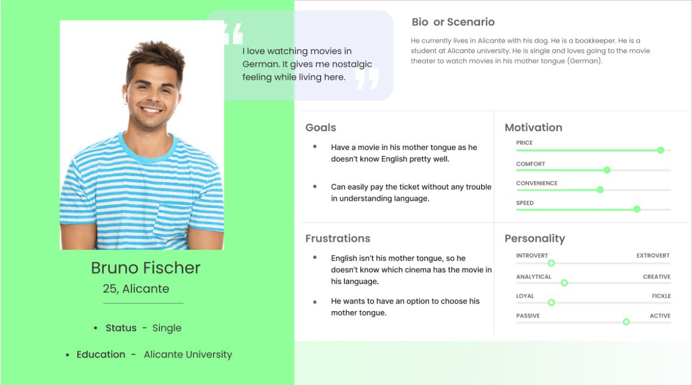
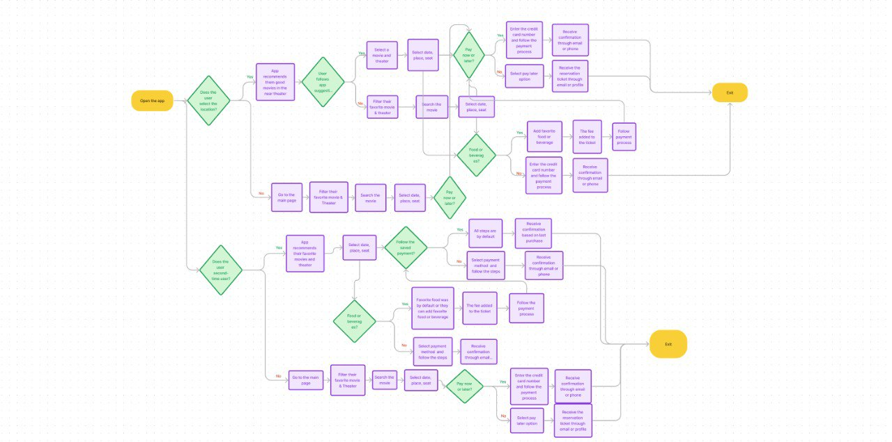
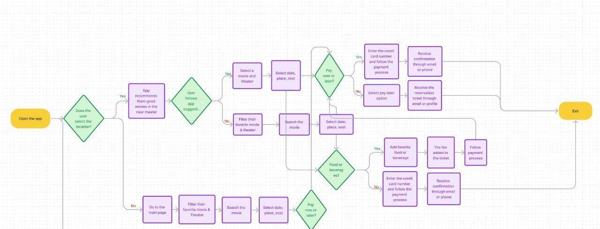
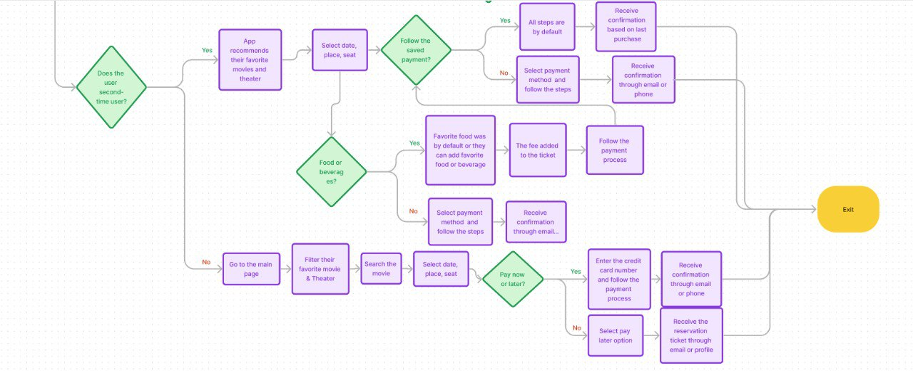
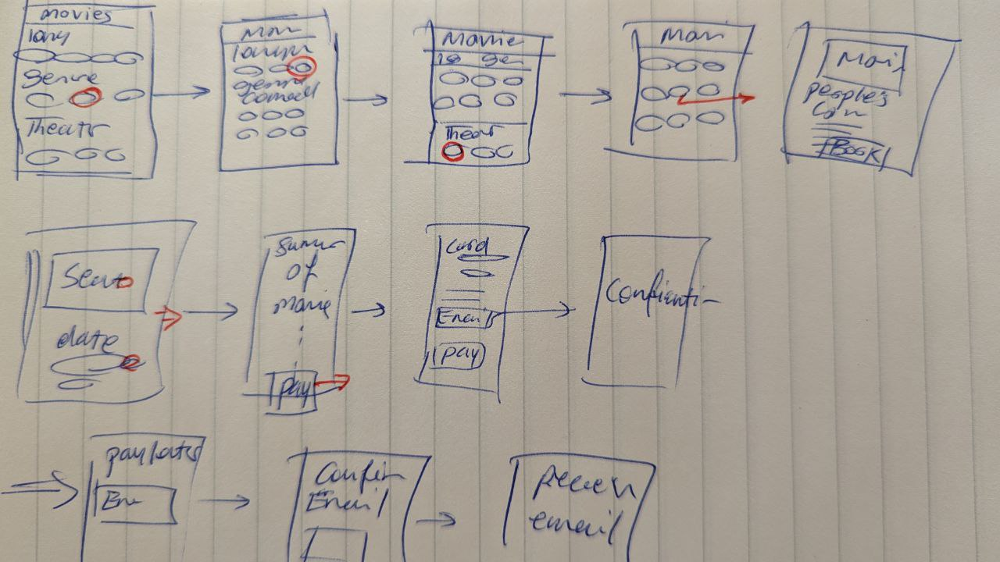
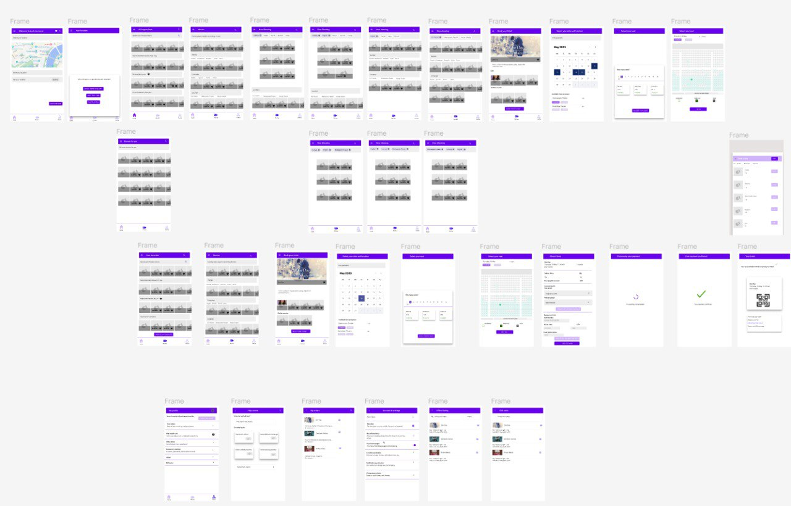
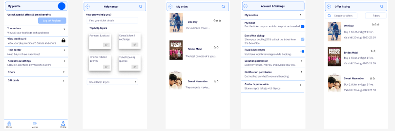

Movie Theater
The Movie Theater app is a user-friendly and comprehensive mobile application designed to enhance the moviegoing experience. It offers a seamless and convenient platform for users to browse the latest movie listings, view showtimes, and purchase tickets effortlessly. With its intuitive interface, users can explore detailed movie information, watch trailers, and read reviews to make informed choices. The app also features a user-friendly seat selection and booking system, allowing patrons to reserve their preferred seats. Additionally, it provides real-time updates on upcoming releases, special promotions, and exclusive deals, making it the ultimate companion for movie enthusiasts, ensuring they have an enjoyable and stress-free cinematic experience.
I was asked to design a user-friendly application for the users to make the process of booking, buying, and paying easier. They were looking for an understandable process for the users since most of their clients are non-native speakers. That’s what I did.
PROJECT OVERVIEW
| Product | My Role | Software |
|---|---|---|
| Movie Theater | UX researcher & UX designer | Figma, Sketch |
Objectives
The movie theater in Barcelona wants to offer to the moviegoing different movies in various languages and develop a user-friendly app. So, my understanding was that we need to focus on user-friendly app for the users.
Design Goals
- Users save time when booking a movie
- Users can pick the language of the movie
- Users can book now and pay later
- Second-time users have special offer
The Process
| Discover | Define | Develop | Design | Deliver |
|---|---|---|---|---|
| Business Research | Primary User Needs | User Flow | Ideation, Sketches | Final Wireframe |
| User Research | Problem & Solution Statement | Information Architecture | Wireframes | Clickable Prototype |
| Comparative Analysis | Create Persona | User Testing, Iterations |
The Challenges
The Problems
- Users face issues with the amount of time and effort required for tasks such as searching, browsing, signing up during the buying ticket online process.
- Users have problems finding movies in their own language.
- Users aren’t informed about new favourite movies on cinema.
- Buying tickets through the application is cumbersome.
The Solutions
- Promote the application that simplifies the search process with user-friendly features, informative search results.
- Through user research and testing re-organize the application and enhance the user experience.
- Develop a fluid user journey for purchasing tickets.
- Make the application user-friendly.
- Provide a feature to see different movies in different languages.
- Allow filtering option to make the process for the user easier to see their favourite genre.
- Notify the second-time user for their favourite movies.
DISCOVER
Instead of skipping some steps and jumping to ideation and developing the prototype, I focus on the design process and have a methodical approach.
User Interview
In the discovery stage, I conducted some qualitative research, which means I focus on understanding the clients, asking broad questions, interviewing moviegoers, looking for user challenges, and identifying what they do that I don’t know. I also conducted comparative analysis.
Qualitative Research - Interview 5 Users
| Positive | Negative |
|---|---|
| See all movies in one place | Can’t find their favourite movie easily |
| Be able to see people’s comments | Can’t be aware if there is any movie in their mother tongue |
| Can’t pay later | |
| Can’t filter their favourite genre | |
| No feature for a second-user |
Takeaways:
These findings show
- The users are busy and need to browse and book their ticket very fast.
- The users are interested in seeing movies in their mother tongue.
- The users would like to have an option to pay later.
- The second-users want to have more options from the app.
Competitive Analysis
To identify potential areas for improvement, I conducted a competitive analysis of 4 prominent movie theater applications before beginning the design phase. By taking screenshots and noting common features, I was able to observe how competitors solve similar problems. By interacting with the application, I also evaluated potential areas for improvement and feature changes.
| Fidibo | Disney | BookMyShow | Crunchyroll | |
|---|---|---|---|---|
| Pay later | ❌ | ✅ | ❌ | ❌ |
| Filtering option | ❌ | ✅ | ❌ | ❌ |
| Feature for second-user | ❌ | ✅ | ❌ | ❌ |
| Easily search for a movie | ✅ | ❌ | ❌ | ❌ |
| Easily book the movie and pay | ❌ | ✅ | ❌ | ❌ |
| Add food & beverage | ❌ | ❌ | ✅ | ❌ |
| People’s comment & review | ❌ | ✅ | ❌ | ✅ |
Major Areas for Improvement:
- Developing easy navigation.
- Adding people’s comments and reviews.
- Adding paying later option.
- Reducing the process for searching and paying for the second-user.
- Adding filtering option.
- Adding food & beverage feature.
DEFINE / ANALYSIS
After my research was completed, I came up with a lot of valuable data and I discovered many problems. The next step in my design process is to analyze the data and define the best solution for the users. I define Persona and Affinity Mapping.
Ideation
I start brainstorming and ideating.
| Ideas to consider | Ideas to ignore |
|---|---|
| Pay later | Smart account/ profile |
| Filtering option | Compare movies |
| Feature for second-user & track them | User can send gift card through the app |
| Easily search for a movie | Offers and promotions |
| Easily book the movie and pay | |
| Add food & beverage | |
| People’s comment & review |
Personas

Anita is 41 years old who lives in Barcelona. She is a salesperson, and she doesn’t have time to brows on the internet during the week. In her free time, she would like to go to the movie theater, but she doesn’t like to look for her favorite genre for hours. She prefers being notified when her favourite movie is on the movie theater.

Bruno is 25 years old who lives in Alicante with his dog. He is a bookkeeper, and he doesn’t know English well. In his free time, he would like to go to the movie theater to see a movie in his mother tongue.
DEVELOP
According to what Anita & Bruno want
I develop my idea to start my design process. For developing the idea I considered a scenario to respond to my persona’s needs, and I conducted the user flow to show their journey through browsing the website, booking and buying their ticket.
User’s Needs
- Save time when booking and buying the ticket online
- Find movies in different language
- See people’s reviews and comments
- Browse, book, and buy a ticket easily
- Pay later option
Solution
- Provide filtering option for users to browse, book, and buy tickets easily
- Have the feature to select their favourite movie in different languages
- Have a chance to see people’s reviews and comments
- Have a pay later option
Scenario & Flow Diagram
Scenarios
Anita likes to search and buy her ticket fast and easy. She goes to the app and goes to the home page. She filters to see her favourite movie and theater, and then selects her favourite movie and theater. She goes to the payment method and receive the confirmation through her email or phone. When she goes to the app for the second time, the app offers her favourite genre and theater. Everything is by default so she doesn’t need to add her payment method again.
Anita needs an app that allows her to filter her favorite genre and she needs to be notified of her favorite genre/ movie via email/phone to have an opportunity to buy the ticket online sooner. If Anita signs up in the app, then she can utilize the filtering option to view only her favorite genre movies. We believe that filtering option for Anita will allow her to find the favourite genre and buy the ticket online.
Bruno wants to be able to filter the movies in his mother tongue. He goes to the app and filter the movies in German so he can see the list of the movies. Then, he selects his movie and theater. He can also see people’s review about different movies and theater to have a better choice. After selecting his movie, he goes to the payment method or he can choose the Pay later option.
Complete user flow

First-time user flow

Second-time user flow

DESIGN
Ideation
Usability Testing Findings
Designed based on discoveries through user research findings and usability testing:
- Clear guidance on where to find their favourite movies and theaters
- Easy payment process
- Provide food & beverage feature
- Filter function available when looking for movies

Low-Fidelity Prototype
Usability Testing Findings
- Did not notice the edit feature in the email address field, unclear on where to edit it
- Review and comments page was not noticeable
- Wanted to have ‘Pay later’ feature
Iterations
- Added the edit logo in the email address field
- Movies and theater is clickable
- Added the ‘Pay later’ feature

Mid-Fidelity Prototype
DELIVER
Interactive Prototype
Search and filter for the first-time users
First-time users can select where they are located, then the app offers them the movie and the movie theater near to them.
If the user doesn’t select location, they can enter the filters to look for their favorite movies and also their favourite language.


Book and Pay for the movie
To help the user to find their favourite genre, I structured the filter option. By that, they can filter based on their favourite genre, actor, and place. They can also easily buy their ticket. After selecting a movie and their seat, the payment method is by default for the second-time user but they can change it.

Second-time users
First of all, when the user opens the app, they can see their favorite movie genre, language, and their favorite movie theater. They can select their favorite movie, or they can update their filtering option. So, the app has everything by default for the second-time user.
The other way to nurture the second-time user is by receiving a pop-up message on their phone about their favorite movie when it is on their favorite movie theater. So, they directed to the app, and they can purchase their ticket less than 3 mins as everything is by default, but they have a chance to update it. Their favourite snack is also by default.


Pay later
The user can select the ‘Pay later’ option.

Add food and beverage
Food & beverages is added to the buying process to give a chance to the user to have everything ready when they get to the movie theater.

Review & comments
The other option that this app offers is giving the user the reviews of the movies and movie theater. By that, the users can see the others comments to help them to decide easier.

Sign up profile
If the user sign up in the profile, they can have different options such as offers and gift cards.

REFLECTIONS
How We Solved the Problem
- Easy navigation
- Clear guidance on finding their favourite movie and theater
- Easy access to the movies in different langauges
- Easy payment process and adding pay later feature
- Measured how long it takes to do the some tasks on the designed app